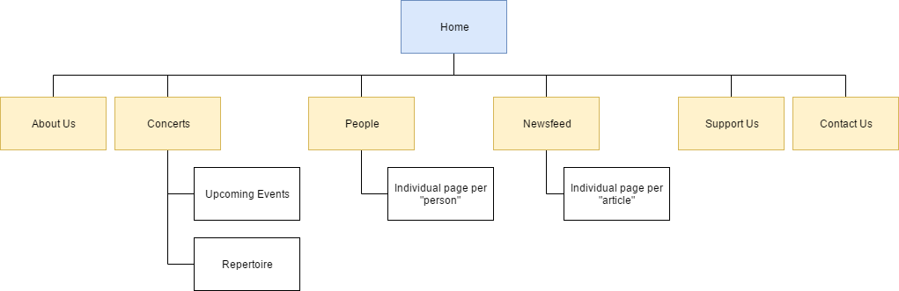
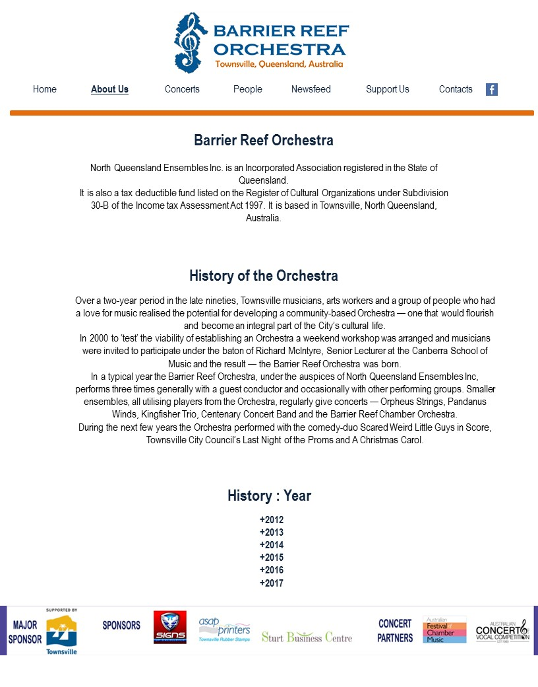
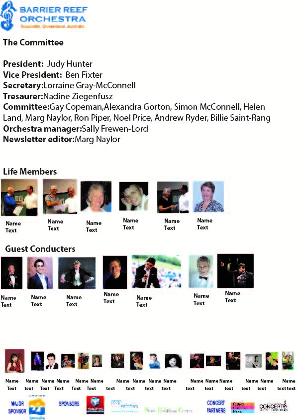
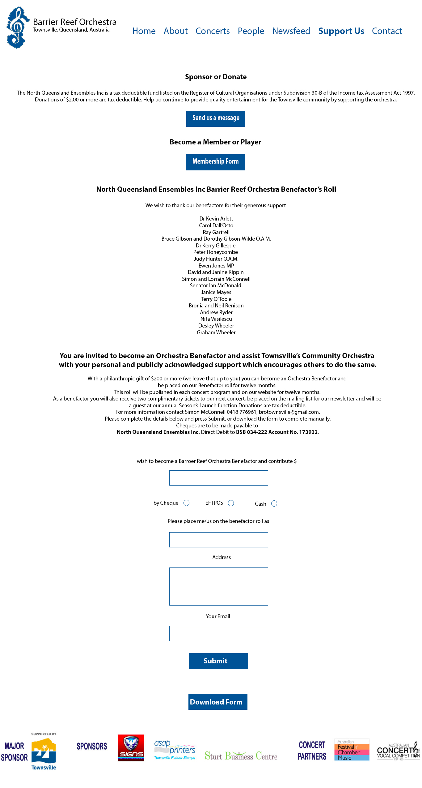

The goal of the project is to effectively update the existing website as it is ineffective. The new website aims to raise awareness about and promote interest in the Barrier Reef Orchestra. The development of the new website for the Barrier Reef Orchestra will increase the audience and potential musicians interested in the community.
The goal of the project is to effectively update the existing website as it is ineffective. The new website aims to raise awareness about and promote interest in the Barrier Reef Orchestra. The development of the new website for the Barrier Reef Orchestra will increase the audience and potential musicians interested in the community.
There are two main target audiences for the website:

| Page Name/Group | Outline/Text Content | Images |
|---|---|---|
| Homepage | Very little text, mostly images: Fast becoming one of North Queensland’s cultural jewels, the Barrier Reef Orchestra this year launches its 17th year of performing orchestral music through North Queensland. BRO is a community orchestra consisting of the finest musicians drawn from Townsville and as far afield as Cairns and Mackay. |
|
| About Us | Breakdown history of the orchestra, from 2003 to 2015. | |
| Concerts > Upcoming Events | A collection of digital posters, used to advertise events. | |
| Concerts > Repertoire | A historical repertoire of all past concerts, from 2003 to now. The repertoire will include the concert's venue, program, list of performers, and songs performed. | |
| People | A grid-like collection of people and their roles in the orchestra. When each icon/person is clicked, the user will be taken to a separate page with their full bio. | See images below. |
| People > Individual | ||
| Newsfeed | A page that shows all the individual news articles in order by date. Each will link to an individual page with the full article. | |
| Newsfeed > Individual Article | ||
| Support Us | Users will have the opportunity to make monetary donations from this page. A contact form with donation information will be available for people to enquire. | |
| Contact | A relatively bare page, will include contact information and a contact form for the orchestra. | |
| All Pages |
| Page & Member | Image |
|---|---|
| Homepage (Jason) | |
| About (Tarryn) |  |
| Artists (Emma) |  |
| Support Us (Kathleen) |  |
| Page | Member |
|---|---|
| Homepage | Jason |
| About Us | Tarryn |
| Concerts > Upcoming Events | Emma |
| Concerts > Repertoire | Jason |
| People | Jason |
| People > Individual | Tarryn & Emma |
| Newsfeed | Kathleen |
| Newsfeed > Individual Article | Kathleen (to do all 6) |
| Support Us | Jason |
| Contact Us | Emma & Jason |